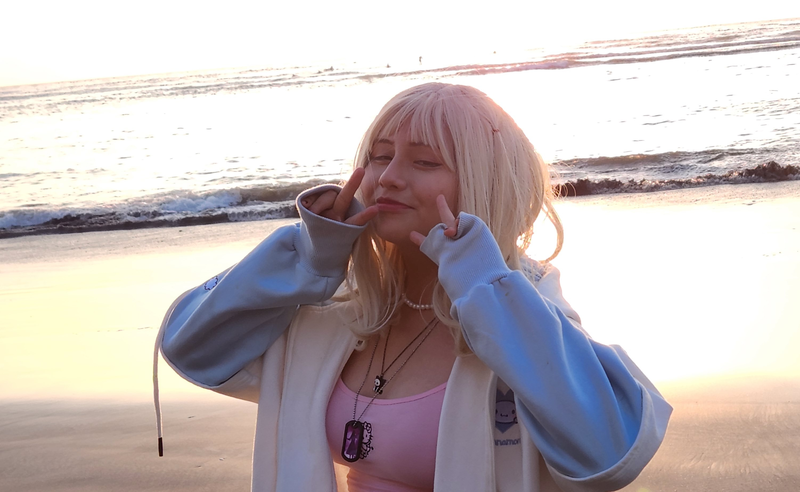
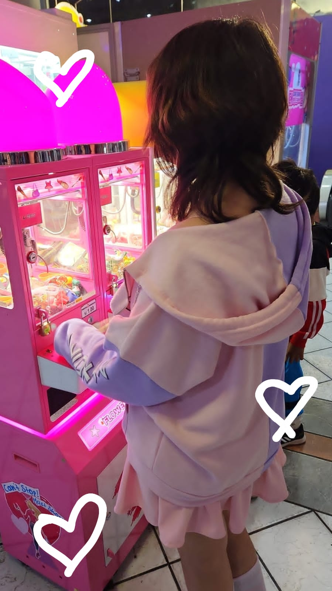
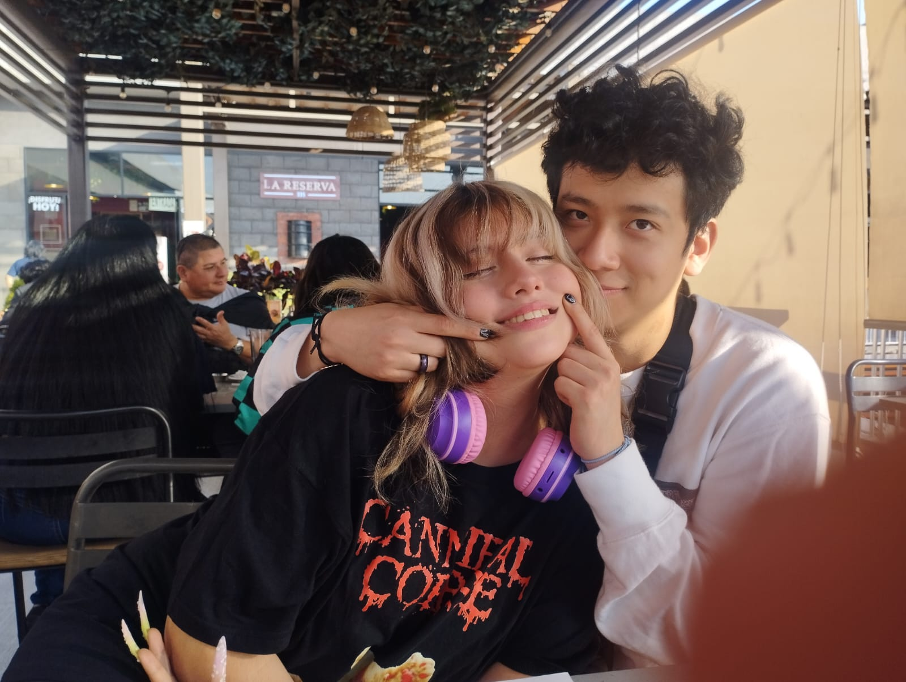
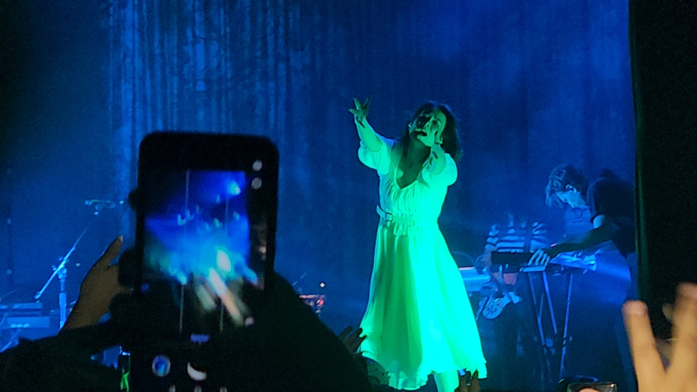

Como siempre te he dicho siempre he sentido que tienes un brillo, jajaja no voy a negar que el atardecer detras de ti ayuda mas a la estetica pero enserio eres tan bella y siempre he sentido que brillas si te preguntas como me sieno o me imagino caundo digo que brillas te diria que esta foto es perfecta representacion de ello
Esa foto se ve tan aesthetic, y ves claramente te debes poner mas seguido la sudadera que yo tr regale te hace ver aesthetic. Lastima que seguimos sin poder ganar nada de estas maquinas ya algun dia le ganare un premio de esas maquinas a mi bb. hasta medio gamer te ves, tambien ya debes jugar mas videojuegos conmigo.
 ¿Existe una sonrisa por la que darias la vida? si alguien me hiciera esa pregunta podria decir si en este mundo daria todo por porteger esa sonrisa tan colorida una sonrisa que te yeva a una fantasia tan vivida tu luchas tanto por esconder esa sonrisa
mientras yo solo quiero que orgullosa estes pues esa sonrisa hipnotiza como cielos celestes o atardeceres naranjas,rosas y purpuras cautiva e inspira asi que doncella, princesa de mis fantasias mirame y respira escucha bien lo que te tengo que decir deja tus miedos ir porque yo iria hasta el fin del mundo por proteger esa sonrisa no importa lo que tome yo e de proteger esa sonrisa escalar hasta lo mas alto, o pelear con bestias no importa lo que he de hacer yo superare cada prueba cada desafio con modestia pues no importa que esa sonrisa siempre quiero poder ver.
Te acuerdas la primera vez que nos vimos, se sentia un seuño, tnto tiempo hablar solo por chat y finalmente estabamos juntos, por fin podiamos habrazarnos, jaja que justo solo nos pasamos abrazados todo el rato aunque mira que le hicite a mi pelo asi parecia brocoli, pero ahh que emocion fue verte por primera vez.
Ensrio que em ese video te ves tan tan tan adorable, no puedo enserio no puedo, ahi te ves tan linda tan adorable, solo me dan ganas de decirte ai mi bb tan linda, tan adorable, es que enserio la peluca el maquillaje tu carita tan linda simplemente te ves tan tan linda.
Jijiji mira como te tengo, esos ojos que me ehchas, ya se bb, se que estas super cautivada por mi precensia. jajaja ya le bajo, pero enserio que fue tan lindo pasar esa primera vez que estuvimos juntos, ir a la playa juntos, comer juntos, simplemente pasar tiempo a tu lado.
Soy bien pro tomando fotos esa foto si se ve con estilo, pero enserio fue tan lindo poder ir a un concierto contigo, y enserio que cuando nos besamos en el concierto por un momento se sintio como salido directo de un libro de romance.
jajaja no se me olvida tu hijo favorito el famoso BOMBO!, conosido por sus exentricidades como: comer pelo, perseguir a su mama y hacer KK con mayuscula. recuarda bb cada vez que tegas pesadillas mejor sueña conmigo y el bombo bailando.
Pero ahora llega la verdadera estrella , el conejo que queria ser globito de agua, el conejo que quiere escapar rascando lo que sea el unico, mejor que bombo, el inigualable Twilit,. Miralo como alza la pata sabe que la gente lo ama.
Que romanticos, como la escena de la dama y el bagabundo, aunque no estoy seguro de si la cebolla fue la eleccion mas romantica del mundo, aun asi es un lindo recuerdo, jaja aunque aun si raro la cebollafue tan divertido pasar un mes contigo ya practicamnete viviendo juntos.
Feliz San Valentin bb, se que no somos siempre la pareja perfecta y mas uktimamente hemos tenido nuestros malos momentos aun asi estoy feliz de poder decr que tu eres mi novia, y se que tampoco es mucho pero espero que te haya gustado este pequño album de fotod que harme, te amo mucho mucho, y enserio espero poder seguir pasando mas San Valentins contigo.